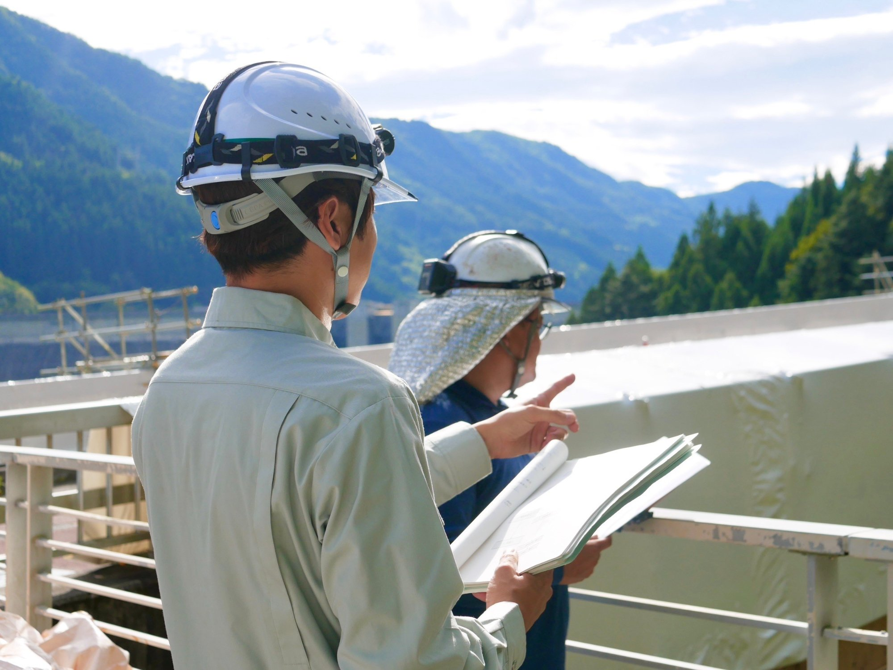
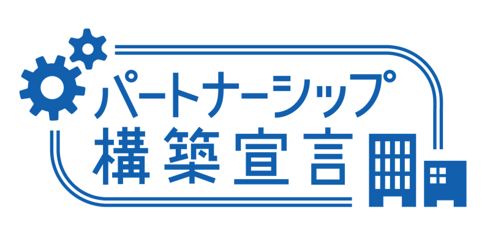
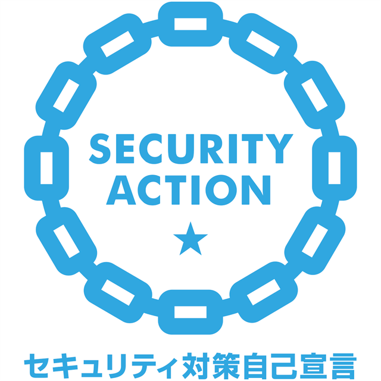
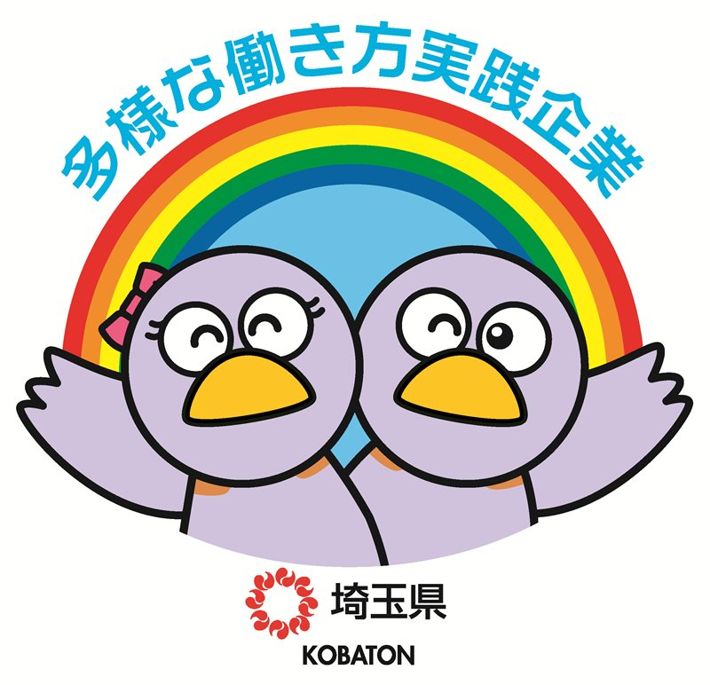
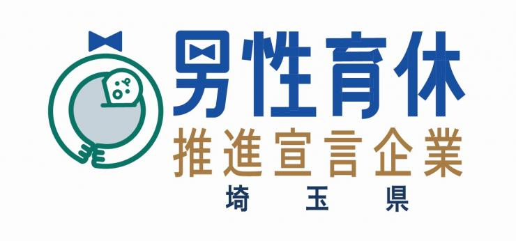

Choei Construction — Civil Engineering Since 1978
確かな技術で、
未来を築く。
埼玉県秩父地域を拠点に、道路・舗装・河川・治山・橋梁工事を得意とする土木建設会社。「精励恪勤」の精神で、地域インフラを支え続けて半世紀。

埼玉県秩父郡長瀞町 — Local Infrastructure PartnerOur Philosophy
経営理念
当社は、昭和53年7月に中畝土建として創業し、翌年「長栄建設株式会社」として現在に至ります。埼玉県秩父地域を拠点に、道路・舗装・河川・管工事・治山・林道・橋梁工事を得意とし、受注の約9割を埼玉県・市・町から頂いております。
私たちは「精励恪勤」を社是とし、安全第一・顧客重視・健全経営の三本柱で地域インフラを支えてきました。発注者の立場に立ち、工期内完成・コスト削減・高品質な施工を徹底します。
ISO 9001認証を取得し、品質マネジメントの面でも高い水準を維持。少人数で高品質な施工を実現することで、地域社会の安全と発展に貢献し続けます。
Facts & Figures
数字で見る長栄建設
Founded
1978
昭和53年創業。半世紀にわたり秩父地域のインフラを支えています。
Licensed Engineers
7名
1級土木施工管理技士。ほか2級土木施工管理技士2名・給水装置工事主任技術者1名が在籍。
Public Works
約9割
受注の約9割が埼玉県・市・町発注の公共工事です。
ISO Certified
9001
ISO 9001：2015（品質マネジメントシステム）認証取得。
Our Services
事業内容
道路改築・舗装整備・自転車歩行者道整備など、幅広い道路工事に対応します。県・市・町発注の公共工事を数多く手がけ、地域の交通インフラを支えています。
河川護岸・通常砂防工事・災害復旧工事を得意とします。自然災害から地域を守るインフラ整備を継続的に担い、安全な生活環境の維持に貢献しています。
橋梁の新設・補修・修繕工事を手がけます。高度な技術力を要する橋梁工事において豊富な実績を持ち、安全で長寿命な橋梁の整備を支えています。
送水管布設・下水道枝線工事・配水管布設替え工事など、生活に欠かせない上下水道インフラの整備・維持管理を幅広く手がけています。
山地災害防止のための治山工事と林道整備を手がけます。豊かな自然環境を守りながら山間地域の安全を確保し、持続可能な森林管理を支援します。
駐車場・フェンス・門扉・舗装・排水設備など、建物周辺の外構整備を幅広く手がけます。地域密着で培った技術と信頼で、安全・高品質な施工をご提供します。
Our Works
施工実績
Projects：10
Company Profile
会社概要
| 会社名 | 長栄建設株式会社 |
|---|---|
| 創業 | 昭和53年 |
| 代表取締役社長 | 中畝 靖人 |
| 資本金 | 2,000万円 |
| 所在地 | 埼玉県秩父郡長瀞町大字野上下郷1920番地 |
| 建設業許可 | 埼玉県知事（特７）第25958号 |
| 事業内容 | 舗装工事、道路工事、河川工事、管工事、治山工事、林道工事、橋梁工事 |
| 技術者 | 1級土木施工管理技士 7名 ／ 2級土木施工管理技士 2名 ／ 給水装置工事主任技術者 1名 |
| 認証 | ISO 9001：2015 認証取得 |
| 取引銀行 | 埼玉りそな銀行 秩父支店 ／ 埼玉信用組合 皆野支店 ／ 武蔵野銀行 秩父支店 |
| 主要取引先 | 埼玉県・市・町 |
Certifications
認証・登録・宣言

パートナーシップ構築宣言
埼玉県SDGsパートナー
埼玉県経営革新計画承認企業

SECURITY ACTION 一つ星宣言

多様な働き方実践企業（埼玉県認定・ゴールド）

男性育休推進宣言企業（埼玉県）
埼玉県アライチャレンジ企業
Recruit
採用情報
長栄建設では、共に地域インフラを支える仲間を募集しています。土木工事に携わりたい方、地域に貢献したい方のご応募をお待ちしております。経験者優遇・未経験の方もご相談ください。
1・2級土木施工管理技士などの資格取得を会社が全面サポート。技術者として着実にキャリアアップできる環境を整えています。
受注の約9割が埼玉県・市・町の公共工事。創業半世紀の実績と信頼で安定した雇用を提供しています。
少人数だからこそ、一人ひとりの裁量が大きく成長スピードも早い。垣根のないオープンな環境で、若手からベテランまでが対等に意見を出し合えるチームです。
Contact
お問い合わせ
工事のご相談・お見積りのご依頼など、お気軽にお問い合わせください。
受付時間 平日 8:00〜17:00 ／ FAX：0494-66-3085